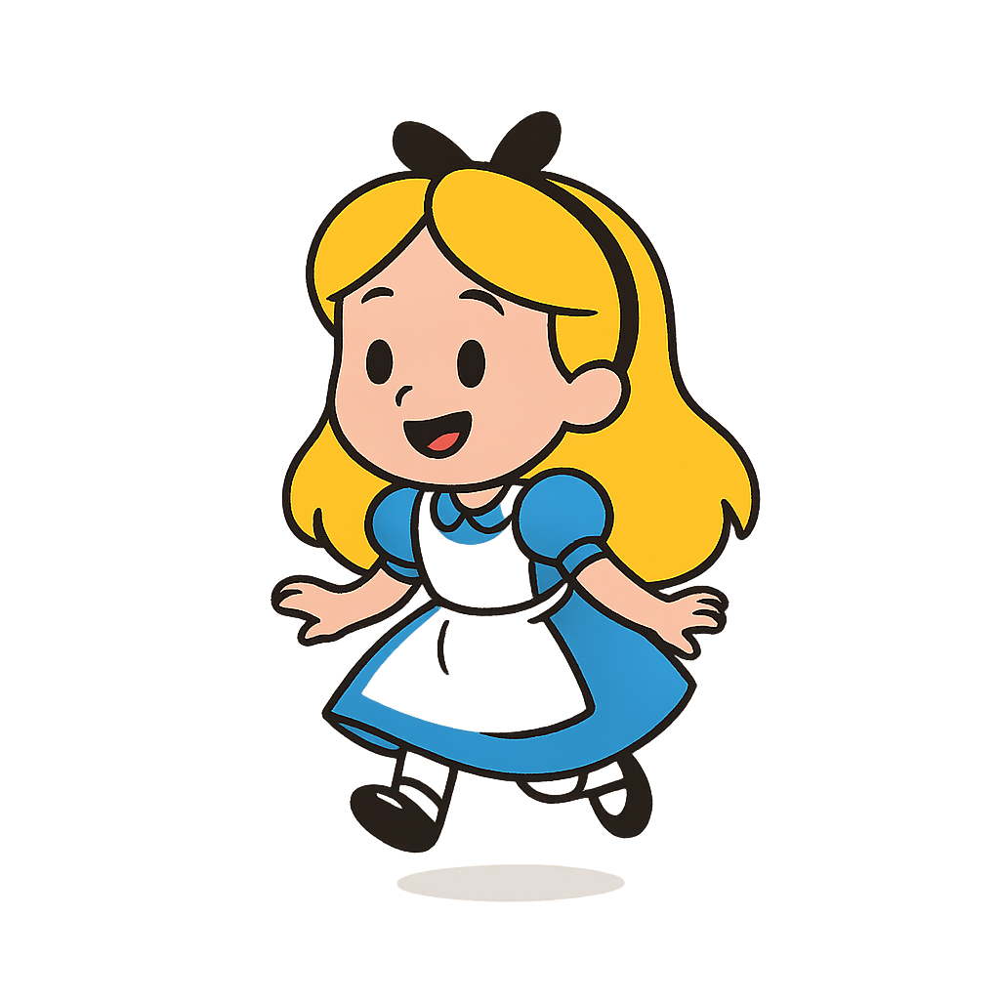

Descubra sua muiteza!
Gatos risonhos e coelhos de ternos, venha testar sua muiteza..
Pergunta 1 : Aonde a família do chapeleiro maluco estava presa?
Pergunta 2 : Por que a cabeça da Rainha vermelha é grande?
Pergunta 3 : Qual seu personagem favorito?
Pergunta 4 : Qual combina mais com a sua personalidade?
Pergunta 5 : Como a Alice voltou para casa?
Pergunta 6 : Como o pai da Alice ajudava ela a acordar dos sonhos?
Verifique sua muiteza!
Clique aqui para ver suas respostas... 
- Resposta 1 : C)
- Resposta 2 : D)
- Resposta 5 : B)
- Resposta 6 : B)